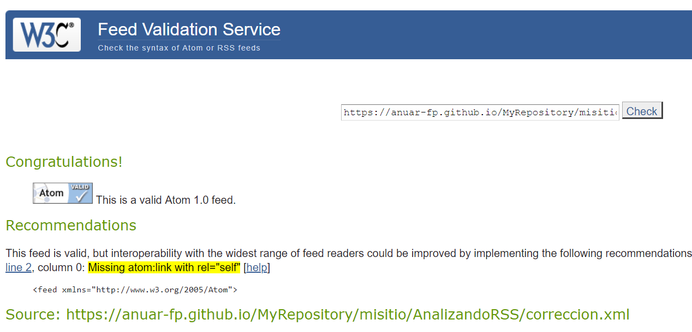

El "validator" nos indica que el "feed" es valido.
En la línea 17 y 18 vemos el error "Email address is missing real name", con poner un email valido se solucionaria.
En la línea 82 vemos el error " Missing atom:link with rel="self"", para solucionar este erro solo tendremos que declara que es
un feed rss añadiendo lo siguiente: rss version="2.0".
Luego tan solo deberemos poner un enlace a nuestro feed en "channel" atom:link href="http://dallas.example.com/rss.xml" rel="self" type="application/rss+xml".
Desde la linea 4 a la 50.
Dispone de 10 estiquetas item.
El "validator" nos indica que el "feed" es valido.
En la línea 12 y 14 veremos el error "Email address is missing real name", con poner un email valido se solucionaria.
En la línea 18 vemos el error "Image title doesn't match channel title", esto es porque el "title" de la imagen tiene que ser el mismo que del "channel".
En la línea 19 vemos el error "Image link doesn't match channel link", tiene que tener el mismo "link", que del "channel".
En la línea 32 vemos el error "item should contain a guid element", se soluciona añadiendo un "guid" único para cada "item"
En la línea 51 vemos el error "Missing atom:link with rel="self"".
Desde la linea 3 a la 51.
Dispone de 3 estiquetas item.
El "validator" nos indica que el "feed" es valido.
En la línea 12 veremos el error "item should contain a guid element", se soluciona añadiendo un "guid" único para cada "item".
En la línea 23 veremos el error "style attribute contains potentially dangerous content: FONT-SIZE: 10pt; FONT-FAMILY: "Arial","sans-serif"", esto es debido a que algunas
de las caracteristicas no son compatibles y ocaciona errores, por lo que se debe modificar.
En la línea 421 veremos el error "Missing atom:link with rel="self"".
Desde la linea 3 a la 421
Dispone de 69 estiquetas item.
El "validator" nos indica que el "feed" no es valido.
En la línea 6 veremos el error "link must have an href attribute", hay que poner un enlace con la url del link.
En la línea 17 veremos el error "id must be a full and valid URL: Z_CAP_C_LEMM_20190327225002_AFAP7431.tar.gz", la URL es erronea,
y tiene que ser esta http://www.aemet.es/documentos_d/eltiempo/prediccion/avisos/cap/Z_CAP_C_LEMM_20190327225002_AFAP7431.tar.gz.
En la línea 6 veremos el error "link should not have text (all data is in attributes)" falta rel:self.
En la línea 2 veremos el error " Missing atom:link with rel="self"".

Link de la Página de W3C validator
Desde la linea 2 a la 20.
Dispone de 3 estiquetas item.
<?xml version="1.0" encoding="ISO-8859-1" ?>
<rss version="2.0">
<channel>
<title></title>
<link></link>
<description></description>
<item>
... <!-- Tantos elementos como entradas queramos -->
</item>
</channel>
</rss>
Solo puede haber 1
<title></title>
<ink></link>
<description></description>
language, language, managingEditor, webMaster, pubDate, lastBuildDate, category, generator, docs,
cloud, ttl, image, textInput, skipHours, skipDays
title, link, description, author, category, comments, enclosure, guid, pubDate, source
<enclosure ulr=""></enclosure>
<enclosure lenght=""></enclosure>
<enclosure type=""></enclosure>
<?xml version="1.0" encoding="utf-8"?>
<feed xmlns="http://www.w3.org/2005/Atom">
<title>Example Feed</title>
<link href="http://example.org/"/>
<updated>2003-12-13T18:30:02Z</updated>
<author>
<name>John Doe</name>
</author>
<id>urn:uuid:60a76c80-d399-11d9-b93C-0003939e0af6</id>
<entry>
<title>Atom-Powered Robots Run Amok</title>
<link href="http://example.org/2003/12/13/atom03"/>
<id>urn:uuid:1225c695-cfb8-4ebb-aaaa-80da344efa6a</id>
<updated>2003-12-13T18:30:02Z</updated>
<summary>Some text.</summary>
</entry>
</feed>
Solo 1.
<title>Example Feed</title>
<updated>2003-12-13T18:30:02Z</updated>
<id>urn:uuid:60a76c80-d399-11d9-b93C-0003939e0af6</id>
<author></author>
<link></link>
<category></category>
<contributor></contributor>
<generator></generator>
<icon></icon>
<logo></logo>
<rights></rights>
<subtitle></subtitle>
<id></id>
<title></title>
<updated></updated>
<author></author>
<content></content>
<link></link>
<summary></summary>
<category></category>
<contributor></contributor>
<published></published>
<rights></rights>
<source></source>